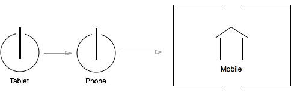

CAVE
Conversational Architecture Visual Expression language
Request For Comments
v. 0.8.1
by Loren Davie and Jared Caponi
Introduction
We are witnessing the rise of contextual applications. In the past, applications, whether they were websites, desktop applications or otherwise, operated without regard to the circumstances of their users. Today, however, we are seeing a new generation of applications that react and respond dynamically to the context and circumstances of their users.
Contextual applications have the potential to interact with users in a more effective, efficient and authentic manner than ever before. Additionally, contextual applications can leverage a wider variety of user interfaces (such as voice and gestural control).
This trend towards contextual applications is driven by five forces identified by Robert Scoble and Shel Israel in their 2013 book The Age of Context.
Five Forces
Mobile Devices
The proliferation of mobile devices has embedded computing capabilities into a wide variety of real-world contexts. Using mobile phones, tablet computers, smart watches, Google Glass, etc., we are now building applications meant to be used while shopping, jogging, driving and so on. This is a far cry from the uniformity of application context historically, where an application designer could assume that the user was sitting at a desk in front of a computer.
Social Media
The widespread adoption of social media such as Facebook, Twitter, LinkedIn and so forth has created a massive graph of human interaction data, enabling introspection into various behaviors and affinities of individuals as they interact with their peers. This data can form the basis of insights about users, to which applications can strategically respond.
Data
The reduced cost of data collection and storage, combined with new techniques for analyzing data, have made automated insights into user circumstances, preferences and behavior more practical than ever before. The availability of user data makes dynamic responses by applications possible.
Sensors
A significant force accompanying the proliferation of data and mobile devices is the ubiquity of sensors. GPS, micro-location, motion sensors, biometric sensors and, of course, cameras, all power the opportunity for passive collection of vast amounts of contextual data (Where is the user? Are they moving? Is their heart beating fast? e.g.) These sensors are becoming increasingly inexpensive, and they are everywhere.
Location
Knowing a user's physical location is key to understanding their context. Whether a user is at work, at home, in transit, or performing an errand, their location implies much about their context. We now have significant amounts of metadata associated with geographical locations, which can be used to make contextual inferences.
The Problem With Contextual Applications
A contextual application responds dynamically to user context. While the business case and the technology exists for the building of contextual applications, what is lacking is a design language in which to articulate them. To describe dynamic response to user context there have been various attempts to draft existing design and specification formats, such as heavily annotated wireframes, UML state diagrams and flowcharts, but none of these are optimized for contextual application design. The problem is exacerbated when trying to describe common modal functionality that can be expressed through multiple user interfaces, or when dealing with a purely contextual interface such as voice control, such as Siri or Google Now.
The lack of a language to articulate contextual applications creates a design bottleneck: the desire and capability to build such applications exists, but there is no way to describe them.
The Conversational Metaphor
The best way to approach an abstract application design problem is to use a foundational metaphor upon which a system of interaction can be built. Some historical examples of foundational metaphors include the *desktop *metaphor in personal computing, and the web page. While there is nothing intrinsic in a computer operating system that requires the concept of a desktop, nor anything intrinsic in the networked exchange of files that requires the concept of a page, both metaphors are used to build an organizational model in the application designer's mind.
For contextual applications, the best foundational metaphor is the natural language conversation. A conversation conducted between two individuals is a perfect example of ongoing dynamic response to context. A conversational participant gathers context concerning their counterpart based both on explicitly communicated information as well as inferences that they make based on their counterpart's actions and circumstances. In response to this context, the participant dynamically alters their behavior in real time.
Describing how an application behaves as a participant in a two-way conversation is the best way to organize and specify the behavior of a contextual application.
CAVE: The Conversational Architecture Visual Expression language
CAVE is a visual design language for expressing the behavior of contextual applications. It uses the conversational metaphor to describe user context and application response.
Example: Bike App To provide a running example, CAVE will be used to describe an app for cyclists that warns them when rain is coming and guides them to shelter. It is envisioned as working on Google Glass-like smart glasses, in conjunction with the cyclist's cell phone.
Goals of CAVE
CAVE is designed with the following goals in mind:
Whiteboard / Napkin / Presentation Friendly
CAVE should adapt well to different formats as needed. It should look fine in highly polished documents or presentations in the boardroom, but at the same time be useful written on the back of a napkin. It should be practical to write CAVE drawings on a whiteboard while discussing application design. In other words, precise usage of CAVE is okay, but sloppy usage of CAVE is also okay.
Methodology Neutral
CAVE is a language, not a methodology. CAVE isn't prescribing best practices for contextual application development, it's just providing a means of expressing them. Additionally, nothing in CAVE should prevent you from using your favorite methodology, nor should it interfere with other existing practices such as agile development or user-centered design.
Scales Up, Scales Down
CAVE should be suitable for sparing use, to describe a simple idea with minimal effort. At the same time you should also be able to use CAVE extensively, to describe large, complex systems, without encountering limitations in the language.
Useful Across Disciplines
Contextual applications are built by teams of people with different skill sets. CAVE should serve everyone on the team, allowing each member to understand the application in the way they specifically need in order to do their job. CAVE drawings should connect the team, effectively acting as a canonical representation of the application.
How CAVE Is Organized
CAVE is organized into three layers, each describing an aspect of a contextual application: data, context and modal response. Each layer builds on the previous one.
Data Layer
A contextual app has to deal with the collection, acquisition and processing of data. This is described in the Data Layer. It shows data and its origins, whether they are sensors, external data sources or user input. A CAVE data drawing should always answer the question, "Where does this data come from?"
Context Layer
From raw data, meaningful context can be inferred. The context layer builds upon the data identified in the data layer, and, through inferences, creates insights into user context. For example, a CAVE context drawing might show how an inference maps user behavioral data to an insight about a user's affinity.
Modal Response Layer
A contextual application will observe user context and respond in a specific way. CAVE modal response drawings show a prioritized stack of target contexts is examined, each with a corresponding modal response.
Data Layer: Managing Data And Its Origins
Context starts with data, and one of the central issues of developing contextual applications is the identification, sourcing and processing of data. The Data Layer of CAVE facilitates the planning of data usage by the application.
Data
Data doesn't spring out of nowhere. It needs to have an origin specified for it, such as a Sensor. Sensors are generally associated with Devices.
Tracing the origin of data from device, through sensor, to data
Sometimes applications use more than one device in conjunction, pulling capabilities from both devices. A common case is a wearable tech item working in conjunction with a smart phone, using Bluetooth. This is called a Device Federation.
Two devices working together
It's also possible that the application is using data that is provided by an external source, such as through the API of a social network.
Data can also originate from external data sources, such as APIs
Typically, a CAVE data layer drawing will show the association between data and its origins. This allows application developers to know what will be required in terms of integrations, device capabilities and so on.
Processed Data
Sometimes data can be processed to create more refined data. Typically the resulting data has additional information that has been extrapolated from the rawer input. This is called Processed Data.
Processed Data can be extracted directly from Data
Finally, there is a special type of data that is treated differently from all others: User Input.
User Input

User Input is explicit input created by the application user via a user interface. Unlike any other data, user input can be accessed directly in the Modal Response layer, it does not have to be processed into context first.
Example: Data for the Bike App
The bike app works as a federation between two devices, the user's smart glasses and his phone. This federation makes available a GPS Sensor, a Motion Sensor, and User Input methods to applications.
From the GPS Sensor, the bike app extracts the current location of the user and historical route data. The bike app notes how long it takes to bike the distance of historical routes over time, creating average times per route as Processed Data. From the Motion Sensor, the app can determine if the user is in motion.
The app also collects the locations of the user's home and work as explicit User Input.
Finally the app integrates with an external weather service API to pull local weather forecast and radar data, and with a social network API to get locations that are suitable rain shelters.
Context Layer: Finding Meaning In Data
Once data is collected it needs to be interpreted in such a way so that the application knows what the data means. CAVE refers to the product of this interpretation as Context.
User Context Elements
Context is comprised of several different kinds of elements, each of which mean slightly different things for an application.
Persona
A Persona represents an aspect of the user's personality, based on cues from her behavior. A Persona has a specific label, and user traffic is sorted into a handful of personas, effectively serving as behavioral segments.
Affinity
Affinity represents the preferences of the user, either for specific content, products or other items, or for abstract metadata. Affinity is always as a variable placeholder: instead of meaning a specific, labeled affinity, it stands for whatever the affinity of the user happens to be.
Goal

A Goal represents something the user is trying to accomplish. It is used to represent immediate concrete goals, not something abstract or long-term. As such, Goals are treated as a stack, with one primary Goal for a user at a time. Only if the primary Goal is resolved will lower priority Goals be available.
Environment

A user's Environment is the circumstances that surround them while they interact with the application. Environment is a fairly open concept: it may represent the user's location, any sensor data such as motion, biometrics, etc., and the technology the user employs to interact with the application (device, software, etc.). Excluded from a user's Environment are global or widespread conditions that are not unique to the user. See State, below, for those.
Sentiment
Sentiment refers to the inferred emotional state of the user at the time of the interaction. Sentiment is generally categorized as either positive or negative, although more specific emotions can be used if the technical capability to assess them is available. At the modal response layer (see below) Sentiment is always used in an explicitly labeled format (positive, negative, angry, sad, etc.), however it may be either created in a labeled format in an inference, or simply be captured as a placeholder from processed data.
State
A State is a global or widespread condition (for example, the weather) that is significant to the application, but not specific to the user (meaning that it is not part of the user's Environment). Like User Context Elements, State can be created in the Context layer from raw data.
Inferences
An inference processes raw data and produces meaningful context. It is represented by a set of square braces, with the input data associated.
An inference is made from data

For most inferences, there is a condition that must be met by the raw data in order for inference to fire and create the context.
An inference usually has a condition that must be met by the data
In this example, the inference will only fire if the motion data indicates that the user is in motion.
On the right side of the inference is the consequence if it fires. In this case, the inference will assign the label "In Motion" to the user's Environment (see the Environment context element, below) if the motion data indicates the user is in motion.
If the data meets the condition, the context element on the right side of the inference is associated with the user
Device Migrations and Inferences
A device migration is the act of a user changing from one device to another. This action can be used as a triggering condition that modifies a user's Environment.

If the user migrates from their tablet to their phone, their Environment context is modified accordingly
Example: Inferring Context for the Bike App
The bike app contains six inferences:
- If the motion data indicates that the user is in motion, they are associated with the Riding Environment.
- If the current location data and the historic route data indicate that the user's location is along a known route, they are associated with the En Route Environment.
- In the event that the average time per route Processed Data, the current location data and the weather forecast / radar data indicate that it's likely that it will rain before the destination is reached, the current user will be associated with the Rain Imminent Environment.
- If the current location data and the shelter locations data indicate that the user is approaching a rain shelter, the user will be associated with the Riding for Shelter Goal.
- If the current location data and the location of home user input indicate that the user is approaching home, they will be associated with the Riding for Home Goal.
- If the current location data and the location of work user input indicate that the user is approaching work, they will be associated with the Riding for Work Goal.
Modal Response Layer: Dynamic Reaction to Context
The defining characteristic of contextual applications is that, when faced with specific user context, they can change the way they work. In CAVE this dynamic behavior is defined in the Modal Response layer.
Switches
A Switch is a part of a contextual application that reacts to user context. An application may have just one switch or many. Multiple switches act independently of each other.
A Switch has a stack of Context rules, which are evaluated against the current user context in priority order. For each Context rule, there is a corresponding modal response from the Switch. At the bottom of the stack there is always a default response.
A switch shows which contexts trigger which modal responses. Context rules go on the left, modal responses in the middle, user interfaces on the right
Context Rule
A context rule consists of a number of context elements that the switch is seeking to match. If all of the elements of a user's context match the rule, then it will fire and the Switch will respond in the way dictated in the corresponding modal response. A Context Rule may contain specified Persona, Affinity, Goal, Environment and Sentiment elements.
In addition to user context a Context Rule may contain two other elements: a State (a required global condition) and explicit User Input.
If the user's context does not match the Context Rule, the Switch will continue to the next Context Rule in the stack, attempting to match it.
Organizing An Application With Switches
Even for applications for which, for a user, there is only one active Switch, it is often beneficial to subdivide a complicated application into multiple switches. Switch Migrations (see below) can be used to pass control from one Switch to another for a user.
Modal Inventory
Associated with a Context Rule is the Switch's modal response, which consists of a Modal Inventory. The inventory describes all the elements of the Modal Response to the specified context, with the goal of showing the product team what they need to do to implement that modal response.
A modal inventory may consist of any of the following element types:
Content

Content is specific written copy, audio, video or some other format.
Content Policy
To indicate a general policy for content within the modal response, without specifying the exact content, a Content Policy element may be used. It could be labeled "related products" or “customer testimonials.”
Functionality

Functionality indicates some interactive feature set of the application that is activated in this modal response.
Rule

A rule is a business rule that is active within the modal response. This frequently is used in conjunction with a Functionality element, modifying its behavior.
Style
Style specifies the general timber and color of the modal response. It will be reflected in other aspects, such as content and the design of the user interface.
Switch Migrations

Instead of a modal response consisting of a mode inventory, a Context Rule may trigger a Switch Migration. A switch migration indicates that control for the user is being passed to another Switch. On firing a Switch Migration, the new Switch will immediately evaluate the user context starting at the top of its context stack.
User Interfaces
A User Interface may be associated with a modal response. In the case of visual user interfaces, this could be a wireframe or mock-up: in the case of audio user interfaces this might be a card with an example of spoken word content.
The point of User Interfaces in CAVE is to show how they are associated with the modal response of an application.
Example: Bike App Modes - Initial Switch
The Bike App starts operating on its Initial Switch. At this Switch's highest priority, it is looking for the user to be associated with two Environments: Riding (meaning they are in transit) and Rain Imminent (meaning it's going to rain before they reach their destination).
If this rule is satisfied the Bike app will display the rain imminent warning content, calculate the route to the nearest shelter, and migrate to the Rain Imminent Switch.
Otherwise, the default behavior is to display weather information to the rider.
Example: Bike App Modes - Rain Imminent Switch
The highest priority on the Rain Imminent Switch to look for a user with the En Route Environment, the Rain Imminent Environment, who is also carrying a Ride for Shelter Goal. In this case the Bike App will display a Countdown to Rain Content Policy, the Rain Imminent warning, provide directions to the shelter, and carry an urgent style (red warnings, terse language etc.).
If the Environments are present, but the user is instead carrying a Goal of Ride for Work or Ride for Home, the app will migrate to the Beat the Weather Switch.
If neither rule applies, the default behavior for this Switch will be to restore control to the Initial Switch.
Example: Bike App Modes - Beat the Weather Switch
In the Beat the Weather Switch, the highest priority rule is looking for the En Route and Rain Imminent Environments, and either a Ride for Home or Ride for Work Goal. If this is matched, the app will respond with three Content Policies: some exciting music for the rider, a countdown to rain indicator and a countdown to destination indicator.
The second rule is in case the rider changes their mind and decides to find a shelter after all. In this case the two Environments are the same, but the Goal is now Ride for Shelter. This will cause the app to migrate back to the Rain Imminent Switch.
The default behavior, if neither rule fires, is to return control to the Initial Switch.